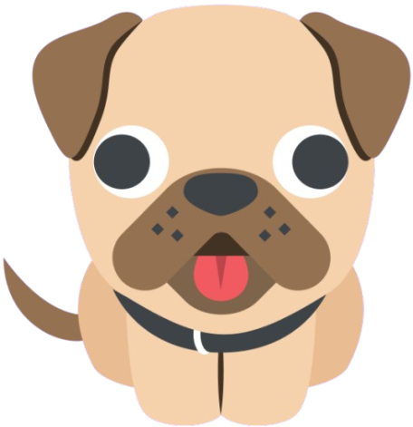
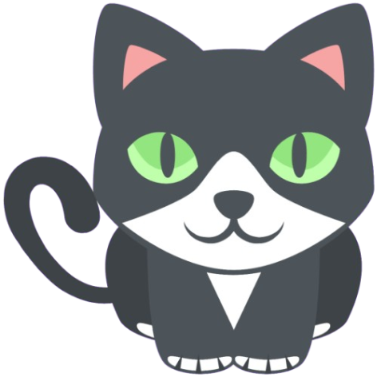

Sobre ACAPRA
A Associação Brusquense de Proteção aos Animais (Acapra) é uma entidade sem fins lucrativos voltada ao cuidado e defesa dos animais em Brusque, Santa Catarina. Criada no ano 2000, sua principal missão é resgatar, recuperar e incentivar a adoção de animais em situação de abandono ou vítimas de maus-tratos. Além disso, a organização busca conscientizar a população sobre a importância da guarda responsável e do respeito aos bichos.

ESTATÍSTICAS SOBRE NÓS!
Adoções realizadas: +1.200 (e crescendo!)
Animais disponíveis para adoção: 350 a espera de um lar!
Estimativa de animais em situação de rua: +5.000
Castrações realizadas: +3.000
Atendimentos veterinários: +8.500

